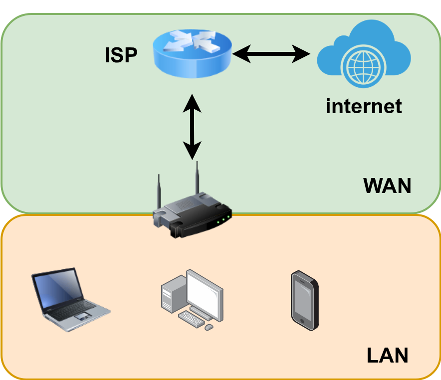
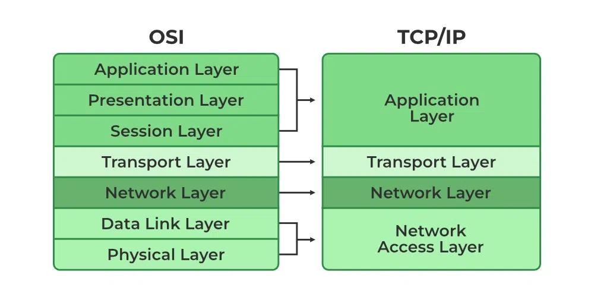
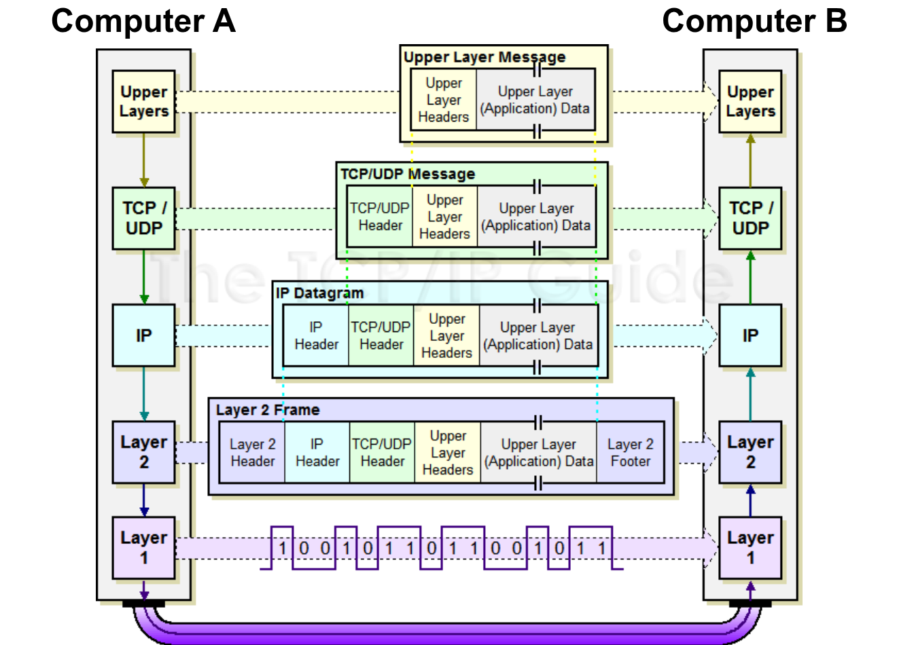
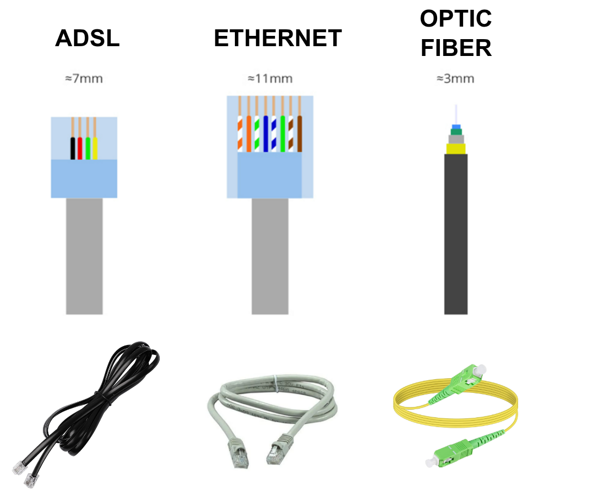
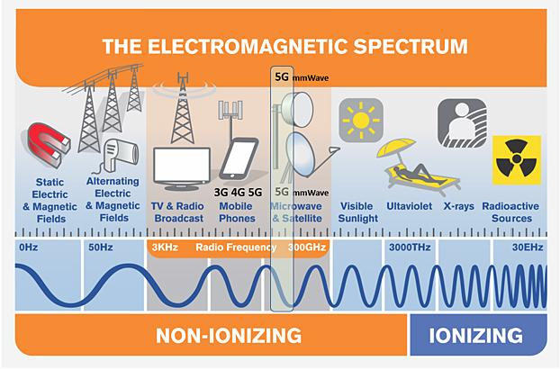
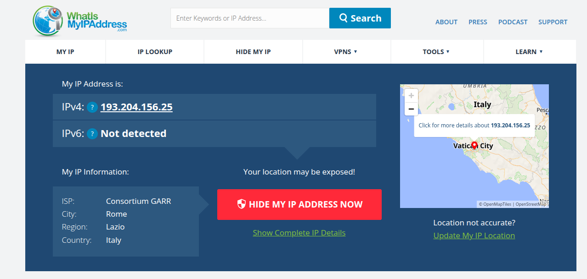
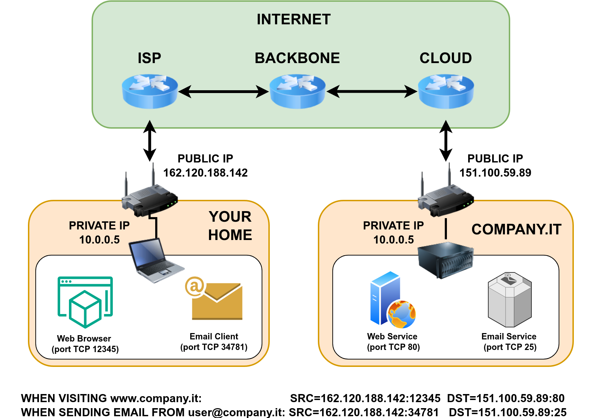
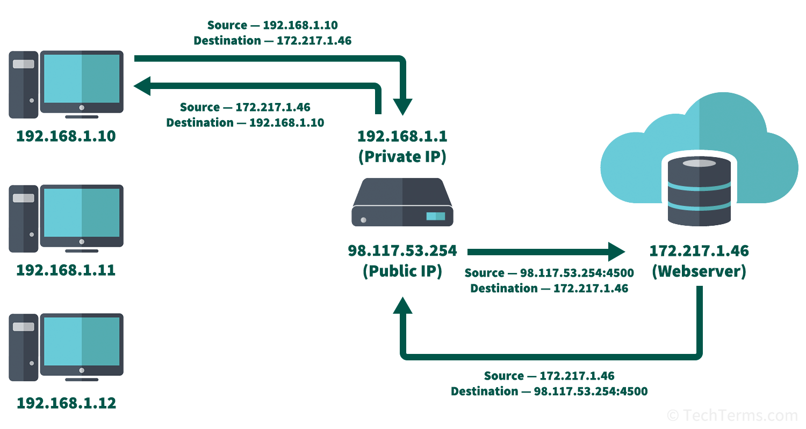
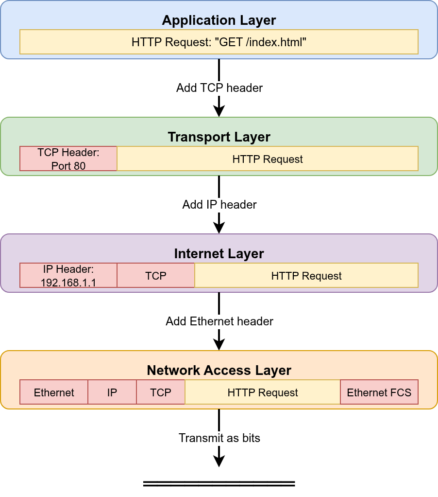

<!-- .slide: data-state="front hide-controls" --> <div id="title">Computer Networks</div> <div id="subtitle">Data Privacy and Security</div> <div id="date">Data Science and Management (DASMA)</div> --- ## Computer Networks <div class="content-center"> Understanding computer networks is essential in today's interconnected world: - **Communication**: How devices exchange data across the internet - **Protocol Stack**: The layered architecture that makes networking possible - **TCP/IP**: The fundamental protocols powering the internet - **Applications**: From web browsing to video streaming - **Security**: Understanding vulnerabilities and protection mechanisms We'll explore the **TCP/IP stack** and see how your computer communicates with the world! </div> --- ## What is a Computer Network? <div class="content-center"> A **computer network** is a collection of interconnected devices that can exchange data and share resources. Key Components: - **Nodes**: Devices connected to the network (computers, phones, servers, routers) - **Links**: Physical or wireless connections between nodes - **Protocols**: Rules governing how data is transmitted - **Data**: Information being exchanged between nodes <br/> <div class="fragment" data-fragment-index="0"> <div class="alert alert-recall"><b>EXAMPLE</b>: When you browse a website, your computer (node) connects through WiFi (link) using HTTP protocol to fetch data from a web server (another node).</div> </div> </div> --- ## Types of Networks <div class="content-center"> Networks can be classified by their **scale** and **coverage**: <br/> <div class="fragment" data-fragment-index="0"> - Local Area Network (**LAN**) - *Coverage*: Small geographic area (home, office, building) - *Examples*: Your home WiFi, office network, the LUISS campus network - *Characteristics*: Typically 1 Gbps (Ethernet) or less (WiFi), private ownership <br/> </div> <div class="fragment" data-fragment-index="1"> - Wide Area Network (**WAN**) - *Coverage*: Large geographic area (cities, countries, continents) - *Examples*: The Internet, corporate networks across multiple cities - *Characteristics*: High-speed backbone links (10–100 Gbps), uses public infrastructure <br/> </div> <div class="fragment" data-fragment-index="2"> - Other Types: - Metropolitan Area Network (**MAN**): City-wide coverage - Personal Area Network (**PAN**): Very small area (Bluetooth devices) </div> </div> --- ## Types of Networks <div class="content-center"> <div class="cell-center"> <p></p> </div> </div> --- ## The Internet: A Network of Networks <div class="content-center"> The **Internet** is the largest WAN, connecting billions of devices worldwide. **Internet Service Provider (ISP)**: Companies that provide internet access and maintain the infrastructure connecting networks together. <div class="cell-center" style="padding-bottom: 10px;"> <img src="img/lan-lan-wan.drawio.png" style="width: 900px;"> </div> </div> --- ## Why Do We Need Network Protocols? <div class="content-center"> Imagine two philosophers, one in Greece and one in China, who want to exchange ideas. They don't speak the same language, they live thousands of kilometers apart, and they have no direct way to communicate. <div class="fragment" data-fragment-index="0"> <div style="padding-bottom: 10px;"> They need to agree on: - A **common language** (e.g., use a translator) - A **means of delivery** (e.g., letters via postal service) - A **format** (e.g., write on paper, use envelopes with addresses) - **Rules for the conversation** (e.g., wait for a reply before sending the next message) Each of these is a **layer** of rules — a **protocol** — that makes communication possible. </div> </div> <div class="fragment" data-fragment-index="1"> <div class="alert alert-error">Computer networks face the <b>same challenges</b>: devices must agree on shared rules (<b>protocols</b>) to communicate reliably across different technologies and distances.</div> </div> </div> --- ## The OSI Model: A Conceptual Framework <div class="content-center"> The **OSI (Open Systems Interconnection)** model is a conceptual framework with **7 layers**: <br/> | Layer | Name | Function | Examples | |-------|------|----------|----------| | **7** | Application | User-facing applications | HTTP, FTP, SMTP, DNS | | **6** | Presentation | Data format translation, encryption | SSL/TLS, JPEG, MPEG | | **5** | Session | Session management | NetBIOS, RPC | | **4** | Transport | End-to-end communication | TCP, UDP | | **3** | Network | Routing and addressing | IP, ICMP | | **2** | Data Link | Physical addressing, error detection | Ethernet, WiFi, ARP | | **1** | Physical | Raw bit transmission | Cables, fiber, radio waves | <br/> <div class="fragment" data-fragment-index="0"> <div class="alert alert-note"><b>NOTE</b>: The OSI model is <b>theoretical</b>. In practice, we use the <b>TCP/IP model</b>, simpler and more practical.</div> </div> </div> --- <!-- .slide: data-auto-animate --> <h2 data-id="title">OSI to TCP/IP</h2> <div class="content-center"> <div class="cell-center"> <p></p> </div> </div> --- ## The TCP/IP Model: The Internet's Foundation <div class="content-center"> The **TCP/IP model** has **4 layers** and is the actual protocol suite used on the internet: <br/> | Layer | OSI Equivalent | Function | Key Protocols | |-------|----------------|----------|---------------| | **Application** | 5-7 | User applications and services | HTTP, HTTPS, FTP, SMTP, DNS, SSH | | **Transport** | 4 | End-to-end data delivery | TCP, UDP | | **Internet** | 3 | Routing across networks | IP, ICMP | | **Network Access** | 1-2 | Physical transmission | Ethernet, WiFi, PPP, ARP | <br/> Each layer adds its own **header** to the data, creating a **protocol stack**. </div> --- ## The TCP/IP Model <div class="content-center"> <div class="cell-center"> <p></p> </div> <br/> </div> --- ## Goals of each layer <div class="content-center"> - **Network Access Layer**: transfer data between devices on the same physical network - two devices connected to the same WiFi or Ethernet can communicate directly - **Internet Layer**: route packets across multiple networks - transfer data from your home network to a web server across the internet - **Transport Layer**: provide reliable or unreliable delivery of data between applications - allows multiple applications on the same device to communicate over the network - **Application Layer**: enable user-level applications to communicate over the network - specific protocols for web browsing, email, file transfer, etc. </div> --- <!-- .slide: data-state="break-blue hide-controls" --> # Layer 1: Network Access --- ## Layer 1: Network Access Layer <div class="content-center"> The **Network Access Layer** handles physical transmission of data: - Converting digital data to electrical/optical/radio signals - Physical addressing (MAC addresses) - Accessing the physical medium (cables, wireless) - Error detection at the hardware level - Nodes are identified by their **MAC addresses** <br/> <div class="fragment" data-fragment-index="0"> <div class="alert alert-recall"><b>MAC Address</b>: A unique 48-bit identifier assigned to work interface card (NIC). Used for <b><i>local</b></i> communication.</div> <div class="alert alert-hint"><b>EXAMPLE:</b> <code>00:1A:2B:3C:4D:5E</code>.</div> </div> </div> --- ## Comparison of Physical Network Links <div class="content-center"> | Technology | Type | Max Speed | Max Distance | Pros | Cons | Use Cases | |------------|------|-----------|--------------|------|------|-----------| | **Fiber Optic** | Wired (Light) | 100+ Gbps | 100+ km | Very fast, immune to EMI, secure | Expensive, fragile | Backbone, data centers | | **Copper (Ethernet)** | Wired (Electrical) | 10 Gbps | 100m | Cost-effective, easy setup | Limited distance, EMI-prone | LANs, home networks | | **WiFi (802.11)** | Wireless (Radio) | 1-10 Gbps | 50-100m | No cables, mobile | Interference, security risks | Home, offices, hotspots | | **4G/5G** | Wireless (Cellular) | 100 Mbps - 10 Gbps | Several km | Wide coverage, mobile | Expensive, variable speed | Mobile, remote areas, IoT | </div> <div class="footnotes"> <sup>*</sup> **EMI**: Electromagnetic Interference </div> --- ## Physical Network Links <div class="content-center"> <div class="cell-center"> <p></p> </div> </div> --- ## Electromagnetic Spectrum <div class="content-center"> <div class="cell-center"> <p></p> </div> </div> --- ## WiFi Channels <div class="content-center"> <div class="cell-center"> <img src="img/wifi.png" style="width: 1400px;"> </div> </div> --- <!-- .slide: data-state="break-blue hide-controls" --> # Layer 2: Internet --- ## Layer 2: Internet Layer <div class="content-center"> The **Internet Layer** is responsible for routing data across networks: - Routes packets from source to destination - Works across different types of networks - Provides logical addressing (IP addresses) - Key Protocol: **Internet Protocol (IP)** - Nodes are identified by their **IP addresses** <br/> <div class="fragment" data-fragment-index="0"> <div class="alert alert-warning">We are using IPv4 but (slowly) moving to IPv6: extremely costly to change entire infrastructure!</div> </div> </div> --- ## IP Addressing <div class="content-center"> **IP Address**: A unique numerical identifier for each device on a network <br/> <div class="fragment" data-fragment-index="0"> - **IPv4**: 32-bit address (e.g., `192.168.1.1`) - Format: Four numbers (0-255) separated by dots - Problem: Only 4.3 billion addresses (running out!) <br/> </div> <div class="fragment" data-fragment-index="1"> - **IPv6**: 128-bit address (e.g., `2001:0db8:85a3:0000:0000:8a2e:0370:7334`) - Format: Eight groups of hexadecimal numbers - Solution: 340 undecillion addresses (virtually unlimited) </div> </div> --- ## IP Addressing: Public vs Private <div class="content-center"> <div class="columns-container columns-top"> <div class="col"> **Public** IP Addresses: - Globally unique and routable on the internet - Assigned by ISPs - Required for direct internet communication - Example: `8.8.8.8` (Google's DNS server) </div> <div class="col"> **Private** IP Addresses: - Used within local networks (LANs) - Not routable on the internet - Can be reused in different networks - Ranges: - `10.0.0.0` to `10.255.255.255` - `172.16.0.0` to `172.31.255.255` - `192.168.0.0` to `192.168.255.255` <br/> </div> </div> <div class="fragment" data-fragment-index="0"> <div class="alert alert-note">To allow multiple devices with private IPs to share a single public IP address when accessing the internet, we use <b>NAT (Network Address Translation)</b> (see later).</div> </div> </div> --- ## What is my IP in LUISS? [Ethernet] <div class="content-center"> <div class="cell-center"> <p></p> </div> </div> --- ## What is my IP in LUISS? [LUISSWpa] <div class="content-center"> <div class="cell-center"> <img src="img/whatismyip-4.png" style="width: 1400px;"> </div> </div> --- ## What is my IP in LUISS? [Eduroam] <div class="content-center"> <div class="cell-center"> <img src="img/whatismyip-3.png" style="width: 1400px;"> </div> </div> --- ## Public IP ranges <div class="content-center"> Universities use the GARR network: - Sapienza Università di Roma: from 151.100.0.0 to 151.100.255.255 - LUISS Guido Carli: 193.204.154.0 - 193.204.154.255 (also other ranges) <br/> Some IP ranges used by italian ISPs: * Vodafone Italia S.p.A. (AS30722): 5.88.0.0-5.95.255.255 * Fastweb SpA (AS12874): 93.32.0.0-93.47.255.255 * WIND TRE S.P.A. (AS1267): 151.48.0.0-151.63.255.255 * Telecom Italia S.p.A. (AS16232): 2.192.0.0-2.199.255.255 </div> --- ## Subnet Mask <div class="content-center"> A **subnet mask** defines which portion of an IP address identifies the **network** and which portion identifies the **host** (device). - Written in the same format as an IP address (4 octets, each 0–255) - Each octet is a sequence of 8 bits: `255` = `11111111`, `0` = `00000000` - Bits set to `1` → **network** part, bits set to `0` → **host** part - The `1`s are always **contiguous** from the left (no mixing allowed) <br/> </div> --- ## Subnet Mask: Bit-Level View <div class="content-center"> **EXAMPLE:** IP `192.168.1.10` with subnet mask `255.255.255.0` | | Decimal | Binary | |---|---|---| | **IP Address** | `192.168.1.10` | `11000000.10101000.00000001.00001010` | | **Subnet Mask** | `255.255.255.0` | `11111111.11111111.11111111.00000000` | Mask bits = `1` → **network** portion, Mask bits = `0` → **host** portion: | | Bits 1–8 | Bits 9–16 | Bits 17–24 | Bits 25–32 | |---|---|---|---|---| | **IP (binary)** | `11000000` | `10101000` | `00000001` | `00001010` | | **Mask (binary)** | `11111111` | `11111111` | `11111111` | `00000000` | | **Role** | Network | Network | Network | **Host** | - **Network part**: `192.168.1` → identifies the network - **Host part**: `.10` → identifies the device within that network <br/> </div> --- <div class="content-center"> Common subnet mask octets and their binary representation: | Decimal | Binary | Network bits | Host bits | |---|---|---|---| | `255` | `11111111` | 8 | 0 | | `128` | `10000000` | 1 | 7 | | `192` | `11000000` | 2 | 6 | | `224` | `11100000` | 3 | 5 | | `240` | `11110000` | 4 | 4 | | `248` | `11111000` | 5 | 3 | | `252` | `11111100` | 6 | 2 | | `254` | `11111110` | 7 | 1 | | `0` | `00000000` | 0 | 8 | </div> --- <div class="content-center"> **EXAMPLE:** IP `192.168.1.10` with subnet mask `255.255.255.0`: <br/> | | Octet 1 | Octet 2 | Octet 3 | Octet 4 | |---|---------|---------|---------|---------| | **IP Address** | 192 | 168 | 1 | 10 | | **Subnet Mask** | 255 | 255 | 255 | 0 | | **Network Part** | 192 | 168 | 1 | — | | **Host Part** | — | — | — | 10 | <br/> <br/> - **Network address**: `192.168.1.0` (all host bits = 0) - **Host range**: `192.168.1.1` to `192.168.1.254` (254 usable hosts) - **Broadcast address**: `192.168.1.255` (all host bits = 1) <br/> <div class="fragment" data-fragment-index="0"> <div class="alert alert-recall"><b>NOTE:</b> Two devices can communicate <b>directly</b> (without a router) only if they are on the <b>same network</b>, i.e., they share the same network part of their IP address.</div> </div> </div> --- ## CIDR Notation <div class="content-center"> **CIDR (Classless Inter-Domain Routing)** is a compact way to express an IP address and its subnet mask: - Format: `IP_address/prefix_length` - The **prefix length** is the number of bits set to `1` in the subnet mask - Replaces the old "classful" system (Class A, B, C) with flexible subnetting <br/> **EXAMPLE:** Converting subnet mask to CIDR prefix: | Subnet Mask | Binary | CIDR | |---|---|---| | `255.0.0.0` | `11111111.00000000.00000000.00000000` | `/8` | | `255.255.0.0` | `11111111.11111111.00000000.00000000` | `/16` | | `255.255.255.0` | `11111111.11111111.11111111.00000000` | `/24` | | `255.255.255.128` | `11111111.11111111.11111111.10000000` | `/25` | | `255.255.255.192` | `11111111.11111111.11111111.11000000` | `/26` | <br/> </div> --- ## CIDR Examples <div class="content-center"> `192.168.1.0/24` — A typical home network: - Subnet mask: `255.255.255.0` - Network: `192.168.1.0` - Host range: `192.168.1.1` – `192.168.1.254` - Usable hosts: **254** <br/> </div> --- <div class="content-center"> `10.0.0.0/8` — A large corporate network: - Subnet mask: `255.0.0.0` - Network: `10.0.0.0` - Host range: `10.0.0.1` – `10.255.255.254` - Usable hosts: **16,777,214** </div> --- <div class="content-center"> `192.168.1.0/26` — A small office subnet: - Subnet mask: `255.255.255.192` - Network: `192.168.1.0` - Host range: `192.168.1.1` – `192.168.1.62` - Usable hosts: **62** </div> --- ## CIDR: Are Two Devices on the Same Network? <div class="content-center"> To check if two IPs are on the same network, apply the subnet mask (bitwise AND) to both: **EXAMPLE:** Subnet `192.168.1.0/24` (mask `255.255.255.0`) | | Device A | Device B | Device C | |---|---|---|---| | **IP** | `192.168.1.10` | `192.168.1.200` | `192.168.2.5` | | **IP AND Mask** | `192.168.1.0` | `192.168.1.0` | `192.168.2.0` | | **Network** | `192.168.1.0` | `192.168.1.0` | `192.168.2.0` | <br/> - A and B → **same network** ✓ (can communicate directly) - A and C → **different networks** ✗ (need a router) </div> --- ## CIDR: Another Example <div class="content-center"> **EXAMPLE:** Subnet `172.16.0.0/16` (mask `255.255.0.0`) | | Device A | Device B | Device C | |---|---|---|---| | **IP** | `172.16.5.10` | `172.16.200.1` | `172.17.0.1` | | **IP AND Mask** | `172.16.0.0` | `172.16.0.0` | `172.17.0.0` | | **Network** | `172.16.0.0` | `172.16.0.0` | `172.17.0.0` | <br/> - A and B → **same network** ✓ (both in `172.16.x.x`) - A and C → **different networks** ✗ (`172.16.x.x` vs `172.17.x.x`) </div> --- ## Gateway (Router) <div class="content-center"> A **gateway** is a device (typically a **router**) that connects two or more different networks and forwards packets between them. - A router has multiple network interfaces, each connected to a **different network** (LAN) - When a device wants to send data to an IP that is **not on its local network**, it forwards the packet to the gateway - The gateway examines the destination IP and forwards the packet toward the correct network - This process repeats hop-by-hop until the packet reaches its destination <br/> <div class="fragment" data-fragment-index="0"> <div class="alert alert-hint"><b>EXAMPLE:</b> Device <code>192.168.1.10/24</code> wants to reach <code>8.8.8.8</code> (Google DNS): 1. Device checks: is <code>8.8.8.8</code> on my network (<code>192.168.1.0/24</code>)? <b>No</b> 2. Device sends the packet to its <b>gateway</b> (e.g., <code>192.168.1.1</code>) 3. The gateway (router) forwards the packet toward <code>8.8.8.8</code> across the internet The gateway configured on a device is called the <b>default gateway</b> — it is the "exit door" from the local network.</div> </div> </div> --- ## DHCP: Dynamic Host Configuration Protocol <div class="content-center"> **DHCP** automatically assigns IP addresses to devices on a network: 1. Device connects to network and broadcasts: "I need an IP address!" 2. DHCP server responds with available IP address and configuration 3. Device accepts and uses the assigned IP address for a lease period 4. When lease expires, device must renew or get a new address <br/> <div class="fragment" data-fragment-index="0"> What DHCP Provides: - IP address: the unique identifier for the device - Subnet mask: defines the network segment - Default gateway (router): the path to external networks - DNS servers: for domain name resolution (see later) - Lease duration (typically 24 hours to 7 days) <br/> </div> </div> --- ## Other Internet Layer Protocols <div class="content-center"> - **ICMP (Internet Control Message Protocol)**: Error reporting and diagnostics - Used by tools like `ping` and `traceroute` - Reports unreachable hosts, network congestion, timeouts - Example: "Destination Host Unreachable" error messages <br/> <div class="fragment" data-fragment-index="0"> - **ARP (Address Resolution Protocol)**: Maps IP addresses to MAC addresses - Operates between Internet Layer and Network Access Layer - When a device knows an IP address but needs the MAC address - Example: Router needs to know MAC address of `192.168.1.10` to deliver packet on local network </div> </div> --- <!-- .slide: data-state="break-blue hide-controls" --> # Layer 3: Transport --- ## Layer 3: Transport Layer <div class="content-center"> **Transport Layer** provides end-to-end communication between applications through two main protocols: <div class="fragment" data-fragment-index="0"> <div class="columns-container columns-top"> <div class="col"> - **TCP (Transmission Control Protocol)**: - Connection-oriented: Establishes connection before sending data - Reliable: Guarantees delivery and error-free transmission - Packets may arrive out of order, but TCP **reorders** them before delivering to the application - Flow control: Manages data rate to prevent overwhelming receiver - Use cases: Web browsing, email, file transfer (when reliability matters) <br/> </div> <div class="col"> - **UDP (User Datagram Protocol)**: - Connectionless: No connection establishment - Unreliable: No delivery guarantees, packets may be lost or arrive out of order - Fast: Lower overhead, minimal delay - Use cases: Video streaming, online gaming, DNS queries </div> </div> </div> <div class="fragment" data-fragment-index="1"> <div class="alert alert-recall">TCP is more reliable but slower, while UDP is faster but less reliable. The choice depends on application requirements.</div> </div> </div> --- ## TCP: The 3-Way Handshake <div class="content-center"> Before any data is sent, TCP establishes a reliable connection using a **3-way handshake**: 1. **SYN** — Client sends a synchronization request to the server 2. **SYN-ACK** — Server acknowledges and sends its own synchronization request 3. **ACK** — Client acknowledges the server's request <br/> <div class="fragment" data-fragment-index="0"> After the handshake, a **reliable bidirectional channel** is established. Data can now flow in both directions with guaranteed delivery and ordering. </div> <div class="fragment" data-fragment-index="1"> To close the connection, a similar process occurs with **FIN** (finish) and **ACK** packets. This ensures both sides agree the communication is complete. </div> </div> --- ## Moving from devices to applications <div class="content-center"> <div class="alert alert-error"><b>PROBLEM</b>: Multiple applications can run on the same device simultaneously (web browser, email client, video call, etc.), each needing its own communication channel. How does the device know which incoming packet belongs to which application?</div> <div class="fragment" data-fragment-index="0"> <div class="alert alert-hint"><b>SOLUTION</b>: <b>Ports</b></div> <br/> </div> <div class="fragment" data-fragment-index="1"> A **port** is a numerical identifier (0–65535) that identifies a specific application or service on a device. - It is the **address at the Transport Layer** — just as IP addresses identify devices, ports identify applications on a device - Each application listens on a specific port (e.g., a web server on port 80) - When a packet arrives, the Transport Layer uses the port number to deliver it to the correct application </div> </div> --- ## Ports: Addressing Applications <div class="content-center"> **Port numbers** identify specific applications or services on a device: - Range: 0–65535 Port Categories: | Range | Category | Usage | |-------|----------|-------| | 0–1023 | Well-known ports | Standard services | | 1024–49151 | Registered ports | Application-specific | | 49152–65535 | Dynamic/Private ports | Temporary client connections | </div> --- ## Common Well-Known Ports <div class="content-center"> <div class="columns-container columns-center"> <div class="col"> - **80**: HTTP (web browsing) - **443**: HTTPS (secure web browsing) - **22**: SSH (secure remote access) - **21**: FTP (file transfer) - **25**: SMTP (email sending) - **53**: DNS (domain name resolution) - **3389**: RDP (Remote Desktop Protocol) </div> <div class="col"> <div class="cell-center"> <p></p> </div> </div> </div> </div> --- ## NAT (Network Address Translation) and Ports <div class="content-center"> NAT allows multiple devices with private IPs to share a single public IP address when accessing the internet. It exploits ports to differentiate between multiple internal devices. <div class="fragment" data-fragment-index="0"> When a device sends a request to the internet: 1. The NAT device replaces the private IP address with its own public IP address. 2. It assigns a unique port number to the request. 3. The NAT device keeps track of the mapping between the internal IP address/port and the external IP address/port. <br/> </div> <div class="fragment" data-fragment-index="1"> When a response comes back: 1. The NAT device uses the port number to identify the correct internal device. 2. It forwards the response to the appropriate internal IP address. </div> </div> --- ## NAT (Network Address Translation) <div class="content-center"> <div class="cell-center"> <p></p> </div> <div class="fragment" data-fragment-index="0"> This way, multiple devices can share a single public IP address while maintaining separate connections. </div> </div> --- <!-- .slide: data-state="break-blue hide-controls" --> # Layer 4: Application --- ## Layer 4: Application Layer <div class="content-center"> The **Application Layer** contains protocols that applications use directly: <br/> - **HTTP/HTTPS** (Web Browsing) - HTTP: Hypertext Transfer Protocol (TCP port 80) - HTTPS: HTTP Secure with TLS/SSL encryption (TCP port 443) - Used for web pages, APIs, and web services <br/> <div class="fragment" data-fragment-index="0"> - **DNS** (Domain Name System) - Translates human-readable domain names to IP addresses - Reason why we do not need to remember IPs of websites! - Example: `www.google.com` → `142.250.185.46` - UDP Port 53 </div> </div> --- ## DNS: How Domain Names are Resolved <div class="content-center"> DNS is a **hierarchical, distributed** database. No single server knows all domain names — instead, the work is split across a tree of servers: <br/> - **Root DNS Servers** (13 clusters worldwide, labeled A–M) - Know where to find the TLD servers - **TLD (Top-Level Domain) Servers** (e.g., `.com`, `.org`, `.it`, `.edu`) - Know where to find authoritative servers for each domain - **Authoritative DNS Servers** - Hold the actual DNS records for a specific domain (e.g., `example.com`) - Return the final IP address <br/> </div> --- ## DNS Resolution: Step by Step <div class="content-center"> **EXAMPLE:** Resolving `www.example.com`: 1. **Browser cache**: Already resolved recently? Use cached IP 2. **OS cache**: Operating system checks its local DNS cache 3. **Recursive resolver** (e.g., your ISP or `8.8.8.8`): Checks its cache; if not found, starts querying the hierarchy: - Asks a **Root Server**: "What is the IP of `www.example.com`?" → "I don't know, but ask the `.com` TLD server at this address" - Asks the **`.com` TLD Server**: "What is the IP of `www.example.com`?" → "I don't know, but ask the authoritative server for `example.com` at this address" - Asks the **Authoritative Server** for `example.com`: "What is the IP of `www.example.com`?" → `93.184.216.34` 4. Recursive resolver **caches** the result and returns it to your computer <br/> </div> --- ## DNS Caching and TTL <div class="content-center"> To avoid repeating the full resolution process every time, DNS responses are **cached** at multiple levels: - **Browser cache**: Stores recent lookups (minutes) - **OS cache**: System-level DNS cache - **Recursive resolver cache**: ISP or public resolver (e.g., `8.8.8.8`) caches results <br/> <div class="fragment" data-fragment-index="0"> Each DNS record has a **TTL (Time To Live)** — the number of seconds the result can be cached before it must be re-queried. - Short TTL (e.g., 60s): Faster updates, but more DNS traffic - Long TTL (e.g., 86400s = 24h): Less traffic, but changes propagate slowly <br/> </div> </div> --- ## HTTP: HyperText Transfer Protocol <div class="content-center"> **HTTP** is the protocol used by web browsers to communicate with web servers. It follows a simple **request-response** model: 1. Client (browser) sends a **request**: method, URL, headers, optional body 2. Server processes the request and sends a **response**: status code, headers, body <br/> <div class="fragment" data-fragment-index="0"> Common HTTP methods: | Method | Purpose | Example | |---|---|---| | **GET** | Retrieve a resource | Load a web page | | **POST** | Send data to the server | Submit a form, upload a file | | **PUT** | Update/replace a resource | Update a user profile | | **DELETE** | Remove a resource | Delete an account | <br/> </div> </div> --- ## HTTP vs HTTPS <div class="content-center"> **HTTP** transmits data in **plain text** — anyone intercepting the traffic can read it! <br/> <div class="fragment" data-fragment-index="0"> **HTTPS** = HTTP + **TLS/SSL** encryption: - All data between browser and server is **encrypted** - The server proves its identity with a **certificate** - Protects against eavesdropping, tampering, and impersonation - Uses TCP port **443** (instead of port 80 for HTTP) <br/> </div> <div class="fragment" data-fragment-index="1"> <div class="alert alert-warning"><b>NOTE:</b> We will cover HTTP and HTTPS in detail in a dedicated set of slides. For now, remember: <b>always use HTTPS</b> — HTTP is insecure!</div> </div> </div> --- ## Layer 4: Application Layer (cont.) <div class="content-center"> - **SMTP/POP3/IMAP** (Email when using an email client) - SMTP: Sending emails (TCP port 25, 587) - POP3: Retrieving emails, downloads and deletes (TCP port 110) - IMAP: Retrieving emails, keeps on server (TCP port 143) <br/> <br/> <div class="fragment" data-fragment-index="0"> - **FTP/SFTP** (File Transfer) - FTP: File Transfer Protocol (TCP ports 20, 21) - SFTP: Secure FTP over SSH (TCP port 22) </div> </div> --- ## How Data Flows Through the Stack <div class="content-center"> When you send data, each layer adds its own **header** (encapsulation): <div class="cell-center"> <p></p> </div> <div class="fragment" data-fragment-index="0"> On the receiving side, each layer **removes** its header (decapsulation) and passes data up. </div> </div> --- <!-- .slide: data-state="break-blue hide-controls" --> # Example: Loading a Web Page --- ## Example: Loading a Web Page <div class="content-center"> Let's trace what happens when you visit `https://www.example.com`: 1. **DNS Resolution** (finding the IP address): - **Your computer**: 1. The user types `www.example.com` in the browser 2. Browser checks if IP is cached locally; if not, sends DNS query 3. **Application Layer**: DNS query "What is the IP address of www.example.com?" 4. **Transport Layer**: Wraps query in UDP packet (UDP is fast, suitable for DNS) - Source Port: random high-numbered port (e.g., 54321) - Destination Port: 53 (DNS) 5. **Internet Layer**: Adds IP header - Source IP: your computer's private IP (e.g., 192.168.1.10) - Destination IP: DNS server's IP (e.g., 8.8.8.8 - Google's DNS) 6. **Network Access Layer**: Wraps in Ethernet/WiFi frame and sends to your router (default gateway) </div> --- ## Example: Loading a Web Page (DNS - Router) <div class="content-center"> - **Your router**: 1. Receives the frame, extracts the UDP/IP packet 2. **NAT**: Replaces your private IP with router's public IP and tracks the mapping - Source IP: router's public IP (e.g., 203.0.113.45) - Source Port: new port number for tracking (e.g., 12345) 3. Forwards the packet to the internet </div> --- ## Example: Loading a Web Page (DNS - Server) <div class="content-center"> - **The Internet**: 1. Multiple routers forward the packet hop-by-hop based on destination IP (8.8.8.8) 2. Each router examines the IP header and forwards to the next router - **DNS Server** (e.g., 8.8.8.8): 1. Receives the UDP/IP packet on port 53 2. Extracts the DNS query from the UDP payload 3. Looks up `www.example.com` in its database 4. Finds the IP address: `93.184.216.34` 5. Builds DNS response packet with the IP address 6. Sends UDP/IP packet back: - Source IP: 8.8.8.8, Source Port: 53 - Destination IP: 203.0.113.45 (your router's public IP) - Destination Port: 12345 (the port NAT assigned) </div> --- ## Example: Loading a Web Page (DNS - Response) <div class="content-center"> - **The Internet**: 1. Routers forward the response packet back to your router - **Your router**: 1. Receives the packet on port 12345 2. **NAT**: Looks up the port mapping and translates back - Destination IP: 192.168.1.10 (your computer's private IP) - Destination Port: 54321 (original port) 3. Forwards packet to your computer on the local network - **Your computer**: 1. Receives the UDP/IP packet on port 54321 2. Extracts the DNS response: `www.example.com` = `93.184.216.34` 3. Browser now knows the server's IP address! </div> --- ## Example: Loading a Web Page (HTTPS - Connection) <div class="content-center"> 2. **HTTPS Connection and Request**: - **Your computer**: 1. Browser initiates connection to `93.184.216.34` on port 443 (HTTPS) 2. **Transport Layer - TCP 3-way handshake** (establishing reliable connection): - Your computer → Server: SYN (synchronize) - Server → Your computer: SYN-ACK (synchronize-acknowledge) - Your computer → Server: ACK (acknowledge) 3. **Application Layer - TLS/SSL handshake** (establishing secure connection): - Negotiate encryption algorithms - Exchange certificates - Generate session keys 4. **Application Layer**: Browser builds HTTPS GET request - `GET / HTTP/1.1` - `Host: www.example.com` </div> --- ## Example: Loading a Web Page (HTTPS - Sending) <div class="content-center"> - **Your computer**: 5. **Transport Layer**: Wraps in TCP segment - Source Port: random high-numbered port (e.g., 54322) - Destination Port: 443 (HTTPS) 6. **Internet Layer**: Adds IP header - Source IP: 192.168.1.10 (your private IP) - Destination IP: 93.184.216.34 7. **Network Access Layer**: Sends to router - **Your router**: 1. Receives the frame, extracts TCP/IP packet 2. **NAT**: Translates addresses - Source IP: 203.0.113.45 (router's public IP) - Source Port: 23456 (new tracking port) 3. Forwards to the internet </div> --- ## Example: Loading a Web Page (HTTPS - Server) <div class="content-center"> - **The Internet**: 1. Routers forward the packet hop-by-hop to destination IP (93.184.216.34) - **Web Server** (93.184.216.34): 1. Receives TCP/IP packet on port 443 2. Decrypts the HTTPS request using TLS session keys 3. Processes the HTTP GET request 4. Retrieves the web page content (HTML, CSS, JavaScript, images) 5. Builds HTTPS response with the content 6. Encrypts the response 7. Sends TCP/IP packet back: - Source IP: 93.184.216.34, Source Port: 443 - Destination IP: 203.0.113.45 (your router's public IP) - Destination Port: 23456 (NAT tracking port) </div> --- ## Example: Loading a Web Page (HTTPS - Result) <div class="content-center"> - **The Internet**: 1. Routers forward the response back to your router - **Your router**: 1. Receives the packet on port 23456 2. **NAT**: Translates back using port mapping - Destination IP: 192.168.1.10 (your computer) - Destination Port: 54322 (original port) 3. Forwards to your computer - **Your computer**: 1. Receives TCP/IP packet on port 54322 2. **Transport Layer**: TCP ensures data arrived correctly and in order 3. **Application Layer**: Browser decrypts HTTPS response 4. Browser parses HTML, loads CSS/JavaScript, renders images 5. **You see the web page!** <div class="fragment" data-fragment-index="0"> <div class="alert alert-note"><b>Note</b>: This is simplified. In reality, modern web pages require dozens or hundreds of additional requests for resources (images, scripts, stylesheets, fonts, etc.), each following a similar process.</div> </div> </div> --- <!-- .slide: data-state="break-green hide-controls" --> # Demo with WireShark --- <!-- .slide: data-state="break-blue hide-controls" --> # VPN --- ## VPN: Virtual Private Network <div class="content-center"> A **VPN** creates an **encrypted tunnel** between your device and a VPN server, hiding your traffic from anyone in between. - All your internet traffic is routed through the VPN server - Your real IP address is **hidden** — websites see the VPN server's IP instead - Data is **encrypted** between your device and the VPN server, even on untrusted networks (e.g., public WiFi) <br/> </div> --- <div class="content-center"> Without VPN: `Your Device` → `Router` → `ISP` → `Internet` → `Website` - ISP can see **all** your traffic (which sites you visit, DNS queries, etc.) - The website sees **your real IP address** - On public WiFi, anyone nearby can potentially intercept your traffic <br/> <div class="fragment" data-fragment-index="0"> With VPN: `Your Device` → ***encrypted tunnel*** → `VPN Server` → `Internet` → `Website` - ISP only sees **encrypted traffic** to the VPN server (not what you're doing) - The website sees the **VPN server's IP**, not yours - Traffic is protected even on untrusted networks <br/> </div> <div class="fragment" data-fragment-index="1"> <div class="alert alert-warning"><b>WARNING</b>: The VPN may track you and can see your encrypted traffic!</div> </div> </div> --- ## VPN Use Case 1: Remote Work <div class="content-center"> A company has internal services (file servers, databases, internal web apps) accessible only from the **office LAN**. Employees working from home are on a **different network** and cannot reach those services directly. <br/> <div class="fragment" data-fragment-index="0"> With a **corporate VPN**: 1. The employee connects to the company's **VPN server** over the internet 2. An encrypted tunnel is established between the employee's device and the VPN server 3. The employee's device gets a **virtual IP address** on the company's internal network 4. Now the employee can access internal services **as if they were in the office** The company controls the VPN server and can enforce access policies, logging, and authentication. <br/> </div> </div> --- ## VPN Use Case 2: Consumer VPN (Privacy) <div class="content-center"> Ordinary users can subscribe to a **consumer VPN service** (e.g., NordVPN, Mullvad, ProtonVPN) to protect their privacy online. <br/> <div class="fragment" data-fragment-index="0"> Goals: - **Hide browsing activity from the ISP**: The ISP only sees encrypted traffic to the VPN server - **Mask your IP address**: Websites see the VPN server's IP, not yours - **Bypass geo-restrictions**: Connect through a server in another country to access region-locked content (e.g., streaming services) - **Protect on public WiFi**: Encrypt all traffic on untrusted networks (airports, cafés, hotels) <br/> </div> <div class="fragment" data-fragment-index="1"> <div class="alert alert-warning"><b>WARNING</b>: You are <b>trusting the VPN provider</b> with all your traffic! A dishonest VPN provider can log, inspect, or sell your browsing data. Choose carefully.</div> </div> </div> --- ## VPN Implementations <div class="content-center"> Two widely used open-source VPN implementations: <br/> <div class="columns-container columns-top"> <div class="col"> <div class="fragment" data-fragment-index="0"> **OpenVPN** (2001): - Mature, battle-tested, widely supported - Uses **OpenSSL** for encryption (TLS-based) - Runs in **user space** (no kernel modifications needed) - Supports both **UDP** (default, faster) and **TCP** (port 443, for restrictive networks) - Large codebase (100,000 lines of C) → harder to audit - Used extensively in corporate and consumer VPNs </div> </div> <div class="col"> <div class="fragment" data-fragment-index="1"> **WireGuard** (2018): - Modern, minimalist design - Uses state-of-the-art cryptography (ChaCha20, Curve25519, BLAKE2s) - Runs in **kernel space** → very fast, low latency - **UDP only** by default - Tiny codebase (4,000 lines of C) → easy to audit and verify - Built into the Linux kernel since version 5.6 - Increasingly adopted by consumer VPN providers </div> </div> </div> </div> --- ## VPN: UDP vs TCP and Detection <div class="content-center"> Most VPNs use **UDP** by default for performance (lower overhead, no double reliability layer with TCP-over-TCP). <br/> <div class="fragment" data-fragment-index="0"> However, UDP-based VPN traffic is **easy to detect**: - Firewalls and ISPs can identify unusual patterns of UDP traffic on non-standard ports - Some countries and corporate networks **block** known VPN protocols entirely <br/> </div> <div class="fragment" data-fragment-index="1"> To evade detection, some VPN implementations can switch to **TCP port 443** (the same port used by HTTPS): - VPN traffic looks like **normal HTTPS traffic** to the network - Much harder for firewalls and ISPs to distinguish from regular web browsing - Trade-off: **lower performance** due to TCP overhead (and potential TCP-over-TCP issues) OpenVPN natively supports TCP mode. WireGuard (UDP-only) can be wrapped in TCP using tools like `udp2raw` or `wstunnel`. <br/> </div> </div>